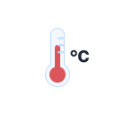
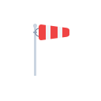

Everything here answers a question a chaser actually has, at the moment they have it.

The numbers that matter
Temperature and wind, plus the two variables generic weather apps leave out:
CAPE and lifted index. Those tell you whether the atmosphere can actually
build something.
A Chase Index, not a forecast
A 0 to 100 score blending the observed weather code, gust strength, rainfall rate
and both convective indices, with a ranked list of what drove it. Pure, tested,
and honest about being a judgement aid.
Photo first, record second
If the image cannot be copied into permanent storage, the report is never written.
The log can never contain an entry pointing at a file that is not there.
Weather frozen onto the report
No forecast API serves historical conditions for an arbitrary past timestamp, so
the snapshot is copied onto the record at capture time. A report stays readable
years later.

Works with no signal
A persisted query cache, an explicit offline banner over the last good reading,
and a bundled sample dataset that is always labelled as sample data.
Legible in daylight
Nothing renders below 12px, every tappable control clears 44px, and contrast is a
unit test: WCAG AA is asserted across all three themes on every build.